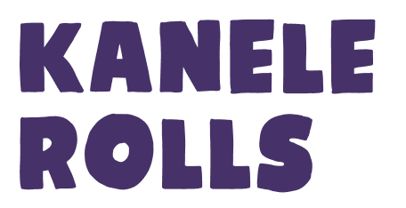
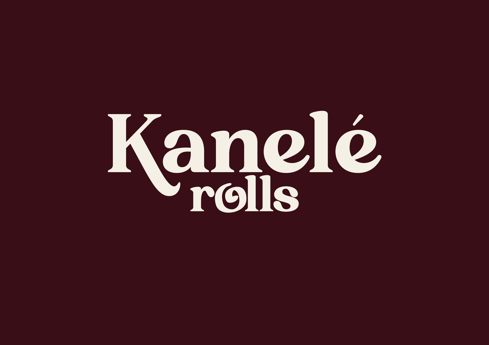
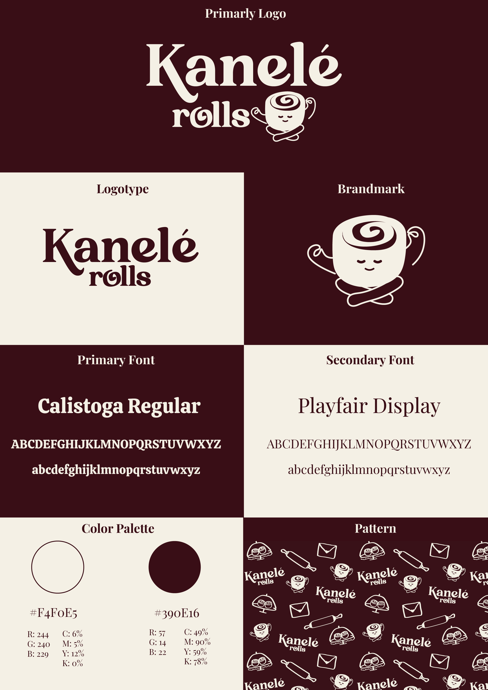
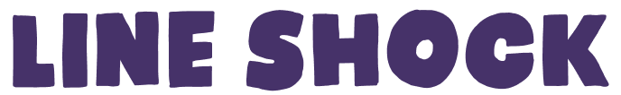
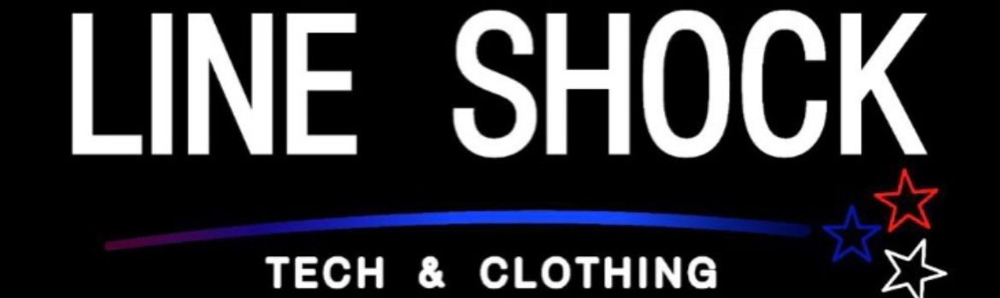
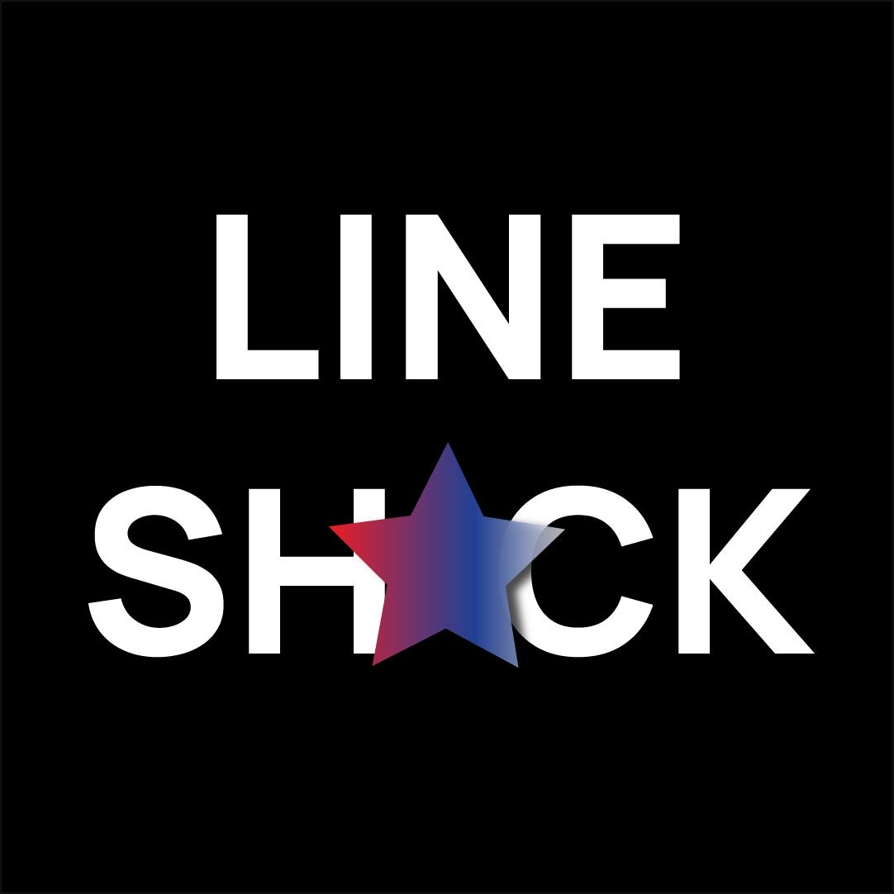
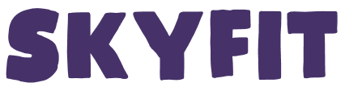
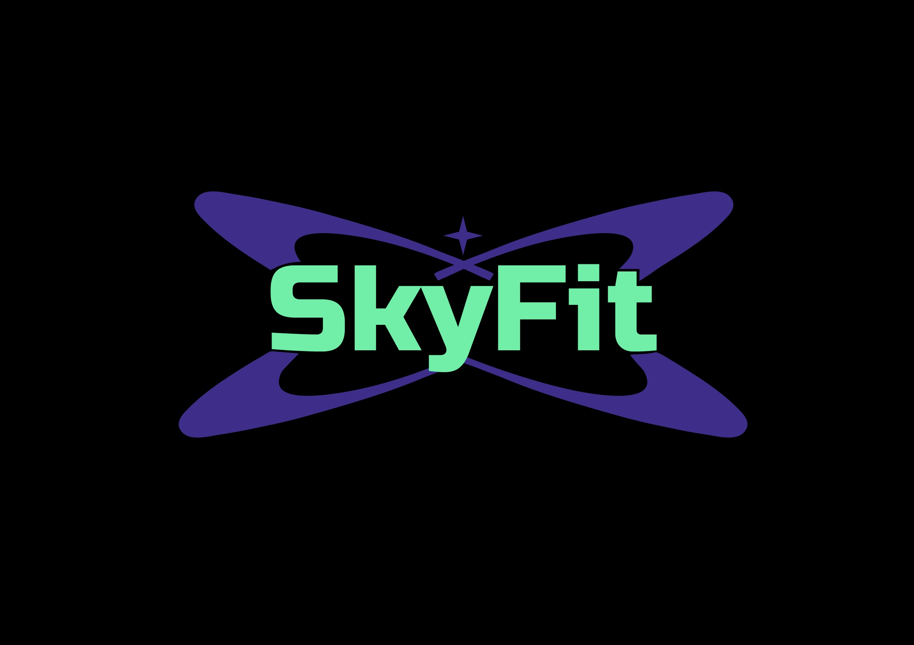
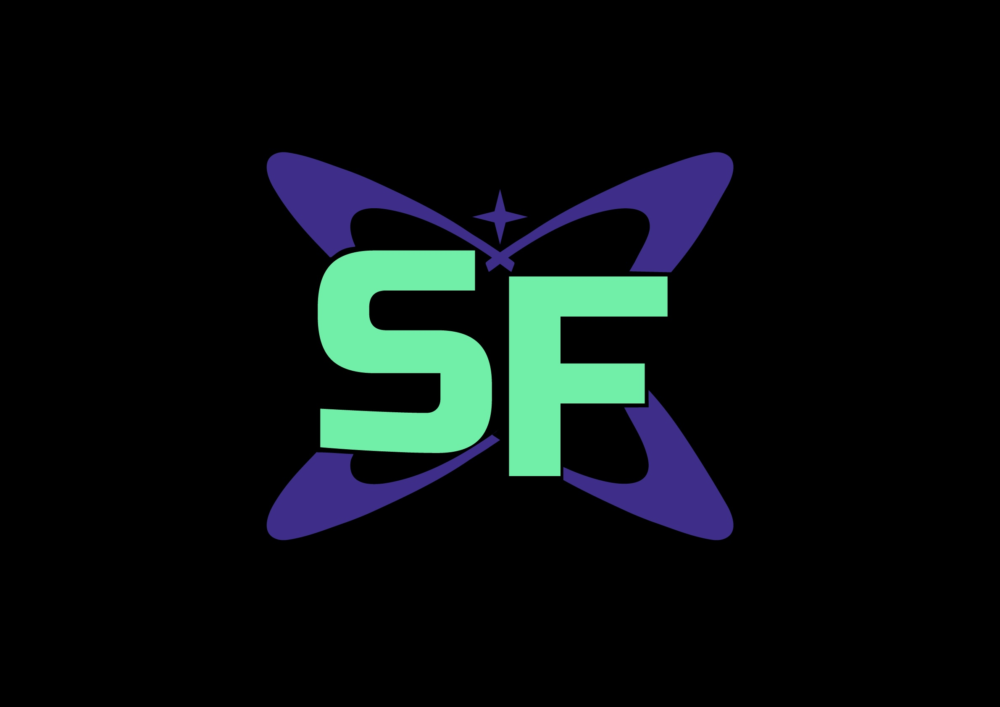
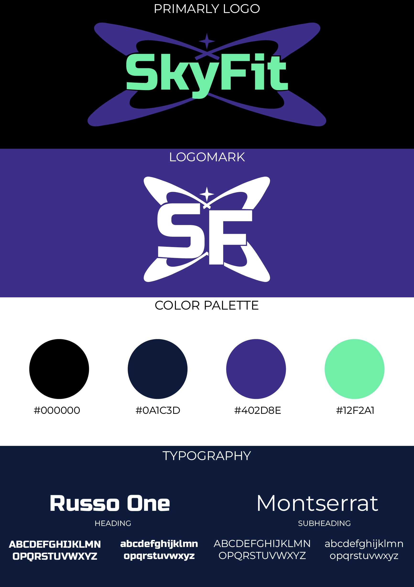

Kanelé Rolls es una marca de cinnamon rolls inspirada en el slow living. Su identidad se construye a partir de la idea de pausa, hogar y disfrute consciente, utilizando la espiral como símbolo de calma y continuidad, y una estética cálida, elegante que transmite bienestar y calidad premium.



Line Shock es una marca de tecnología y ropa americana. Su identidad se construye a partir de una linea y 3 estrellas que simbolizan velocidad, innovación y una explosión, representando el impacto inmediato de la tecnología en la vida diaria. La estética es moderna y contundente, transmitiendo fuerza, estilo y tiene 2 variaciones, una para letreros y otra para sus redes sociales.




SkyFit es una marca de entrenamiento personal inspirada en la superación y el crecimiento constante. Su identidad transmite energía, disciplina y motivación, reflejando el objetivo de ayudar a las personas a alcanzar su mejor versión y proyectando a futuro la creación de su propio gimnasio.